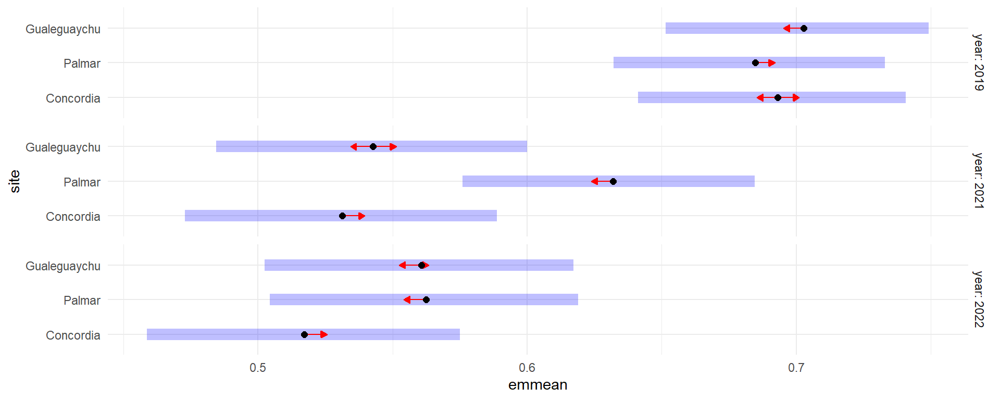

DL ER (Data loggers - Entre Ríos)
Tabla resumen
| Año | Sitio | Temperatura (°C) | Humedad Relativa (%) |
|---|---|---|---|
| 2019 | Concordia | 20,8±1,6a | 69,2±2,5ab |
| 2019 | Palmar | 22,2±1,7a | 68,5±2,6b |
| 2019 | Gualeguaychu | 20,0±1,6b | 70,3±2,5a |
| 2021 | Concordia | 23,8±1,8a | 53,1±3,0b |
| 2021 | Palmar | 21,7±1,7b | 63,2±2,8a |
| 2021 | Gualeguaychu | 21,7±1,7b | 54,3±3,0b |
| 2021 | Concordia | 22,8±1,7a | 51,7±3,0b |
| 2022 | Palmar | 21,5±1,6b | 56,2±2,9a |
| 2022 | Gualeguaychu | 19,9±1,5c | 56,1±2,9a |
| Two-way ANOVA p value | Temperatura | Humedad Relativa |
|---|---|---|
| Sitio | <0,001 | <0,001 |
| Año | <0,001 | <0,001 |
| Sitio*Año | <0,001 | <0,001 |
Temperatura
Gráfico de temperaturas

Tabla resumen
| year | site | n | Mean |
|---|---|---|---|
| 2019 | Concordia | 51 | 21.7758465 |
| 2019 | Palmar | 51 | 22.2366315 |
| 2019 | Gualeguaychu | 51 | 20.0606775 |
| 2021 | Concordia | 51 | 23.7719175 |
| 2021 | Palmar | 51 | 21.7120136 |
| 2021 | Gualeguaychu | 51 | 21.6773785 |
| 2022 | Concordia | 51 | 22.8526597 |
| 2022 | Palmar | 51 | 21.5567417 |
| 2022 | Gualeguaychu | 51 | 19.8965745 |
Análisis factorial mixto
Comparación de modelos por AIC
## Error in eval(expr, envir, enclos): objeto 'modelo_dl_temp' no encontrado## Error in eval(expr, envir, enclos): objeto 'aic_table' no encontradoModelo
## Generalized linear mixed model fit by maximum likelihood (Laplace Approximation) ['glmerMod']
## Family: Gamma ( log )
## Formula: temp2 ~ year * site + (1 | hour)
## Data: data_dl
## AIC BIC logLik deviance df.resid
## 70837.3771 70917.6550 -35407.6886 70815.3771 10905
## Random effects:
## Groups Name Std.Dev.
## hour (Intercept) 0.121465
## Residual 0.287305
## Number of obs: 10916, groups: hour, 24
## Fixed Effects:
## (Intercept) year2021 year2022 sitePalmar siteGualeguaychu
## 3.12786754 -0.00662376 -0.05297823 -0.06283593 -0.12957746
## year2021:sitePalmar year2022:sitePalmar year2021:siteGualeguaychu year2022:siteGualeguaychu
## -0.00192673 -0.01438792 0.05396480 0.01119255Gráfico de residuos vs. predichos
Gráfico de perfiles
## year site temp
## 1 2019 Concordia 21.7719291
## 2 2021 Concordia 23.7907131
## 3 2022 Concordia 22.8222844
## 4 2019 Palmar 22.2123166
## 5 2021 Palmar 21.7290033
## 6 2022 Palmar 21.5290297
## 7 2019 Gualeguaychu 20.0496101
## 8 2021 Gualeguaychu 21.6778887
## 9 2022 Gualeguaychu 19.8537082
Análisis de varianza
## Analysis of Deviance Table (Type II Wald chisquare tests)
##
## Response: temp2
## Chisq Df Pr(>Chisq)
## year 96.32876 2 < 2.22e-16 ***
## site 238.22684 2 < 2.22e-16 ***
## year:site 14.72270 4 0.0053123 **
## ---
## Signif. codes: 0 '***' 0.001 '**' 0.01 '*' 0.05 '.' 0.1 ' ' 1Efectos simples
## $emmeans
## year = 2019:
## site response SE df asymp.LCL asymp.UCL
## Concordia 22.8252536 1.88080337 Inf 19.4212202 26.8259253
## Palmar 21.4351395 1.76623946 Inf 18.2384507 25.1921182
## Gualeguaychu 20.0512216 1.65220250 Inf 17.0609260 23.5656310
##
## year = 2021:
## site response SE df asymp.LCL asymp.UCL
## Concordia 22.6745641 1.86837642 Inf 19.2930206 26.6488005
## Palmar 21.2526398 1.75120208 Inf 18.0831670 24.9776324
## Gualeguaychu 21.0232950 1.73230447 Inf 17.8880247 24.7080905
##
## year = 2022:
## site response SE df asymp.LCL asymp.UCL
## Concordia 21.6474855 1.78375359 Inf 18.4191006 25.4417216
## Palmar 20.0387011 1.65120703 Inf 17.0502124 23.5509994
## Gualeguaychu 19.2306314 1.58459456 Inf 16.3626996 22.6012330
##
## Confidence level used: 0.95
## Intervals are back-transformed from the log scale
##
## $contrasts
## year = 2019:
## contrast ratio SE df null z.ratio p.value
## Concordia / Palmar 1.06485211 0.0130539724 Inf 1 5.126 <.0001
## Concordia / Gualeguaychu 1.13834728 0.0139458651 Inf 1 10.577 <.0001
## Palmar / Gualeguaychu 1.06901913 0.0130895259 Inf 1 5.451 <.0001
##
## year = 2021:
## contrast ratio SE df null z.ratio p.value
## Concordia / Palmar 1.06690577 0.0130635446 Inf 1 5.289 <.0001
## Concordia / Gualeguaychu 1.07854473 0.0132052264 Inf 1 6.176 <.0001
## Palmar / Gualeguaychu 1.01090908 0.0123769004 Inf 1 0.886 0.6490
##
## year = 2022:
## contrast ratio SE df null z.ratio p.value
## Concordia / Palmar 1.08028387 0.0132279230 Inf 1 6.307 <.0001
## Concordia / Gualeguaychu 1.12567731 0.0137830596 Inf 1 9.669 <.0001
## Palmar / Gualeguaychu 1.04201992 0.0127611495 Inf 1 3.361 0.0022
##
## P value adjustment: tukey method for comparing a family of 3 estimates
## Tests are performed on the log scaleHumedad Relativa
Gráfico de humedad relativa

Tabla resumen
| year | site | n | Mean |
|---|---|---|---|
| 2019 | Concordia | 1212 | 67.9985437 |
| 2019 | Palmar | 1213 | 66.6270453 |
| 2019 | Gualeguaychu | 1213 | 67.1780437 |
| 2021 | Concordia | 1213 | 53.0805169 |
| 2021 | Palmar | 1213 | 62.6376686 |
| 2021 | Gualeguaychu | 1213 | 54.0137774 |
| 2022 | Concordia | 1213 | 50.9885952 |
| 2022 | Palmar | 1213 | 55.7770198 |
| 2022 | Gualeguaychu | 1213 | 55.8833718 |
Análisis factorial mixto
## Error in eval(family$initialize): y values must be 0 < y < 1## Error in eval(family$initialize): y values must be 0 < y < 1Comparación de modelos por AIC
## Error in eval(expr, envir, enclos): objeto 'modelo_dl_hr_beta' no encontrado## Error in eval(expr, envir, enclos): objeto 'aic_table_hr' no encontradoModelo
## Error in eval(expr, envir, enclos): objeto 'modelo_dl_hr_beta_mixto' no encontradoGráfico de residuos vs. predichos
## Error in eval(expr, envir, enclos): objeto 'modelo_dl_hr_beta_mixto' no encontrado## Error in eval(expr, envir, enclos): objeto 'modelo_dl_hr_beta_mixto_ajuste' no encontrado## Error in eval(expr, envir, enclos): objeto 'HV_dl_hr' no encontradoGráfico de perfiles
## year site hr
## 1 2019 Concordia 0.679985437
## 2 2021 Concordia 0.530805169
## 3 2022 Concordia 0.509885952
## 4 2019 Palmar 0.666270453
## 5 2021 Palmar 0.626376686
## 6 2022 Palmar 0.557770198
## 7 2019 Gualeguaychu 0.671780437
## 8 2021 Gualeguaychu 0.540137774
## 9 2022 Gualeguaychu 0.558833718
Análisis de varianza
## Error in eval(expr, envir, enclos): objeto 'modelo_dl_hr_beta_mixto' no encontradoEfectos simples
## Error in eval(expr, envir, enclos): objeto 'modelo_dl_hr_beta_mixto' no encontrado## $emmeans
## year = 2019:
## site response SE df asymp.LCL asymp.UCL
## Concordia 22.8252536 1.88080337 Inf 19.4212202 26.8259253
## Palmar 21.4351395 1.76623946 Inf 18.2384507 25.1921182
## Gualeguaychu 20.0512216 1.65220250 Inf 17.0609260 23.5656310
##
## year = 2021:
## site response SE df asymp.LCL asymp.UCL
## Concordia 22.6745641 1.86837642 Inf 19.2930206 26.6488005
## Palmar 21.2526398 1.75120208 Inf 18.0831670 24.9776324
## Gualeguaychu 21.0232950 1.73230447 Inf 17.8880247 24.7080905
##
## year = 2022:
## site response SE df asymp.LCL asymp.UCL
## Concordia 21.6474855 1.78375359 Inf 18.4191006 25.4417216
## Palmar 20.0387011 1.65120703 Inf 17.0502124 23.5509994
## Gualeguaychu 19.2306314 1.58459456 Inf 16.3626996 22.6012330
##
## Confidence level used: 0.95
## Intervals are back-transformed from the log scale
##
## $contrasts
## year = 2019:
## contrast ratio SE df null z.ratio p.value
## Concordia / Palmar 1.06485211 0.0130539724 Inf 1 5.126 <.0001
## Concordia / Gualeguaychu 1.13834728 0.0139458651 Inf 1 10.577 <.0001
## Palmar / Gualeguaychu 1.06901913 0.0130895259 Inf 1 5.451 <.0001
##
## year = 2021:
## contrast ratio SE df null z.ratio p.value
## Concordia / Palmar 1.06690577 0.0130635446 Inf 1 5.289 <.0001
## Concordia / Gualeguaychu 1.07854473 0.0132052264 Inf 1 6.176 <.0001
## Palmar / Gualeguaychu 1.01090908 0.0123769004 Inf 1 0.886 0.6490
##
## year = 2022:
## contrast ratio SE df null z.ratio p.value
## Concordia / Palmar 1.08028387 0.0132279230 Inf 1 6.307 <.0001
## Concordia / Gualeguaychu 1.12567731 0.0137830596 Inf 1 9.669 <.0001
## Palmar / Gualeguaychu 1.04201992 0.0127611495 Inf 1 3.361 0.0022
##
## P value adjustment: tukey method for comparing a family of 3 estimates
## Tests are performed on the log scale